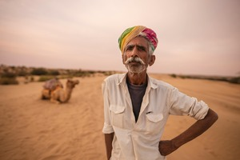
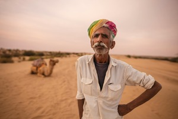

Tour 1
Laurissilva Forest
The island of Madeira is the proud guardian of an environmental heritage of inestimable importance. The Laurissilva forest, which is about 20 million years old, dates back to the Miocene and Pliocene periods of the Tertiary Period. Nonetheless, the mark of time, which makes it a ‘living fossil’, does not seem to affect its vibrant energy.
If in that ancestral past it was distributed throughout the south of Europe and the north of Africa, after climate changes determined by the formation of the Mediterranean, the Laurissilva forest ended up finding its island.
- Explore ancient trees and diverse flora.
- Guided tours with local experts.
- Perfect for nature photography.
- Relaxing walks in a serene environment.
$200 per person
 
